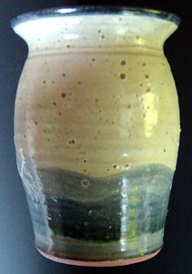

| Economic Factors
and Potters
By Jeff Zamek
Time and Labor
Most potters do not have a true economic sense of the time and labor
involved in making pottery. They can suffer from a lack of business
training and/or a romantic sense of the single craftsmen turning
out much needed ceramic objects. The central economic fact in making
handmade pottery is the significant cost of time and labor. It is
not uncommon once capital expenditures (kilns, slab rollers, clay
mixers, wheels, work tables) labor, fixed costs, variable costs,
and other factors are calculated for potters to net only a few dollars
per hour. Unfortunately, the cost of production is often hidden
by gross sales potters make on their pottery. The true net profit
on the pots is often not calculated. Potters not only have to buy
the supplies make the pots and fire the kiln, but they then have
to figure out how to sell the ware. In short, pottery is a labor-intensive
marginal activity producing items for an aesthetically educated
but limited market. Potters will always be at an economic disadvantage
with the mass produced ware bought by the majority of consumers.
An economic system based on mass production, marketing, advertising,
and mass consumption is at the opposite extreme from the individual
potter who produces, with little access to advertising, one of a
kind limited production functional objects. Individual potters do
not have the resources or the broad based expertise, organization
and personnel to advertise and market their products as do the large
ceramic manufacturing companies.
Of
all the errors that can derail and eventually eradicate a pottery
business it is the mistake of not calculating the actual cost of
labor in producing pots. If a potters labor and time were accurately
assessed for making one coffee cup it would cost the potential customer
at least $35.00. How can a craftsperson compete with the K mart
store "blue light" special coffee cups sold for $1.69?
Sooner or later labor costs and their economic fact of life effects
on the business will literally wear the potter down due to the constant
need of more production to fill orders. The whole situation is magnified
greatly if the potter has a high percentage of wholesale orders
to fill as the net profit is cut by more than 50%. Placing pottery
in stores on a consignment basis, with the hope of selling, is essentially
giving the store owner free inventory. Potters are left making pots
that require extensive labor and must compete against low cost alternative
products for the same customer dollar. In most other industries
this situation does not make for a good business model.
Variable Quality Raw Materials
In the world of ceramics there is a constant that affects all manufacturers
of functional pottery, which includes professional potters, the
ceramic industry, and hobbyists: The only thing consistent about
raw materials used in pottery is their inconsistency in quality
and subsequent performance. With this in mind let's
look at the economic facts concerning raw materials. The process
of making pots starts with assembling raw materials either for clay
body or glaze formulas. If there is a failure in the quality of
raw materials the ensuing pottery does not have much of a chance
to be successful. Not only will the potter lose the actual pot to
a raw material defect, he will lose the time it took to make the
pot, glaze the pot, and the kiln space the pot encompassed during
the bisque and glaze firings. Raw materials are a fragile component
in the production cycle of making and firing pottery. Large-scale
ceramics companies can dictate to the mine quality control parameters
for a raw material or clay because they order millions of pounds
per year. They also have trained staffs of technical specialists
to oversee and correct defects caused by a failure in raw materials.
Individual potters or small pottery producing companies are undercapitalized
not having the resources for a technical staff and not having the
ordering capacity to dictate to the mines the quality of clay they
produce.
All of the economic conditions of small production potters and
large ceramics producing organizations have one element in common:
supply and demand. What does supply and demand have to do with the
clay used in ceramics? Everything. If you are a large-quantity user
of Edgar Plastic Kaolin and need millions of pounds per year to,
say, make spark plugs (which, in fact, does happen), you could then
go to the mines and say: "I need a white, easily pressed, high-temperature,
clean-burning clay. It also has to be "guaranteed" to
have these properties with every batch to insure quality control
over the entire production run. At this point, the management at
the mine looks at your large order and agrees on a specification
for the clay you want, then sets a price. Everything is fine, the
kaolin is delivered to the plant, and spark plugs are produced with
no spit outs, iron specks or other defects, which could be caused
by a substandard material. Other kaolins are also "guaranteed"
as they are used in the manufacturing of paper. Kaolin added to
the paper making process produces a white, opaque sheet of paper
that does not show a bleed line when written upon.
Potters do benefit from knowing about this particular situation
- meaning one bag of such clay is identical to the next, year after
year - and use Edgar Plastic Kaolin with consistent results. Other
virtually guaranteed raw materials are Custer feldspar, G-200 feldspar,
nepheline syenite, whiting, dolomite, flint, calcined kaolin, Kona
F-4 feldspar, magnesium carbonate and lithium carbonate, to name
a few. This guarantee of uniformity, chemical composition and quality
has not been forced on suppliers of raw materials by potters but
by large industrial demands. Potters should simply take advantage
of a situation that has been worked out by the large players in
the supply and demand market.
Another
raw material commonly used by industry is calcium carbonate. A popular
antacid tablet sold over the counter contains as the active ingredient
calcium carbonate. Other large users of calcium carbonate in varied
industries also use this material as it is found in chalk and pharmaceutical
products. The demand for calcium carbonate by large industries "guarantees"
a steady uniform supply for potters. In ceramic use whiting (calcium
carbonate) supplies calcia oxide to glaze formulas and some low
fire clay body formulas.
Unfortunately,
there is a down side to large industries using raw materials that
are also used by potters. It occurs when the industry changes specifications
for the material. Suddenly, a favorite clay body melts or bloats.
Something in the raw material that the potter would consider a horrible
defect might not be considered a defect by a larger user, thus it's
allowed into the mine's batch to the large user. An example of a
good clay for industry that is sometimes a bad clay for potters
is A.P. Green Missouri fireclay. Used mostly in the brick and steel
industries, it is a perfectly good fireclay for their products,
but watch out for those specks of iron and manganese. They might
ruin your best casserole. Why doesn't the mine remove the "impurities"
before it ships the clay? Well, those impurities don't matter to
the large industrial users. What are a few large specks in a brick?
They aren't considered a defect, so why spend money adjusting or
refining a clay that is acceptable to 99.9% of the market? Potters
will always have a certain amount of difficulty using A.P. Green
Missouri fireclay, Hawthorn Bond fireclay, Ocmulgee red clay, Kentucky
ball clay (OM 4) and other such variable quality clays. The probability
is high that over a given period of time there will be some "shift"
in the quality in these clays, which will cause defects for potters.
The same raw materials will cause no noticeable defects for the
industries that use them in producing their products.
Occasionally,
a large industrial user of raw materials simply drops them from
their inventory or doesn't need them any longer for their products.
In such cases the raw material supply still exists in the mine,
it's just not profitable for the mine to keep producing the clay
for only a few potters. At that point potters will eventually exhaust
the supply of material in their studios, or buy a supply of the
material from other potters. In time they will have to find a substitute
material that will produce the same effects in their clays and glazes.
This scenario is a recurrent event in the history of raw materials
potters have come to depend on for their formulas. Buckingham feldspar,
Kingman feldspar, Oxford feldspar, Albany slip, Michigan slip, Gerstley
borate, and countless other raw materials are still in the ground
but not available any longer to the small market of potters.
Individual potters cannot order enough kaolin, or other types of
"guaranteed" clays to demand a specific level of quality
control from the mines or processing plants. They are forced to
accept the raw materials as is, which in many instances means particle
size variations, chemical composition deviations, and tramp material
contamination. Inconsistent raw materials and the potters inability
to change this economic fact are recurrent areas contributing to
the loss of product. While ceramic suppliers, as a general policy,
have limited liability on the clay they sell, it is the potters
who suffer the greater loss. A ceramics supplier will replace "bad"
clay but the potter will not be compensated for their time and labor
in producing the defective pots caused by sub standard clay. The
potter will also not be compensated as a general rule for the damage
caused to kiln shelves or other kiln furniture caused by a defective
clay or raw material. In many instances the potter must prove that
the defect originated in the clay and not in their forming or firing
procedures. Regardless, at some point an inconsistent material will
cause damage to a whole load of pots causing a major financial loss
for the potter who depends on a successful firing for their income.
Next > Economic Strategies
for Selling Pots
More Articles
|